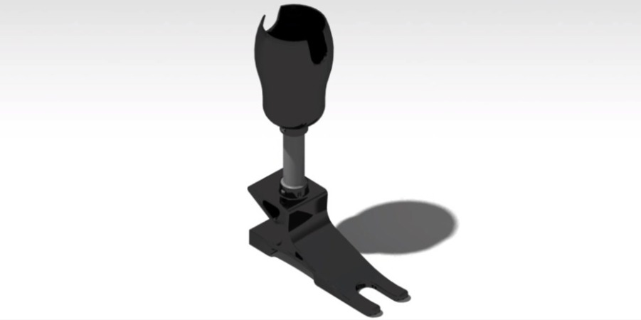

Transtibial Prosthetic
A college project

Challenge
The goal of this project was to create a transtibial prosthetic that was lightweight, affordable, and adaptable to individual users, particularly in low‑resource environments where commercial prosthetics are prohibitively expensive.
The design needed to simulate natural leg movement, withstand daily loads, and be customizable to each user’s anatomy while remaining simple to manufacture with accessible materials and equipment. Achieving biomechanical performance and user comfort at a fraction of the typical cost was the core challenge.
Solution
To meet these requirements, I developed a modular prosthetic system that began with a custom‑fitted socket generated from 3D scans of the user’s residual limb. The foot component was designed to provide controlled flexibility and shock absorption, while the structural elements were engineered for durability and stability.
Initial prototypes were printed in PLA to validate geometry and fit, with long‑term designs transitioning to TPU and ABS for improved flexibility and impact resistance. The design emphasized accessibility, manufacturability, and user‑specific customization without sacrificing mechanical performance.
Engineering Process
The engineering process involved capturing limb geometry through 3D scanning, which allowed me to generate a personalized socket and structural layout in SolidWorks. I evaluated material options based on flexibility, durability, and cost, selecting PLA for early prototypes and TPU/ABS for functional iterations. Multiple prototypes were fabricated using FDM 3D printing to assess comfort, alignment, and mechanical behavior.
I conducted incremental load testing up to 80 kg to validate structural integrity and ensure the prosthetic could withstand typical user loads. Biomechanical considerations such as gait simulation, center of pressure alignment, and load distribution guided iterative refinements throughout the design.
Results
The final prototype demonstrated a sufficient strength to support 176 lb during testing. The fabrication process required only 30 hours, making the design suitable for rapid deployment in underserved communities.
The project was presented to a board of professors at UPNA, where it was recognized for its combination of engineering rigor, human‑centered design, and practical impact. The work highlighted the potential of additive manufacturing to deliver accessible, customizable prosthetic solutions at extremely low cost.